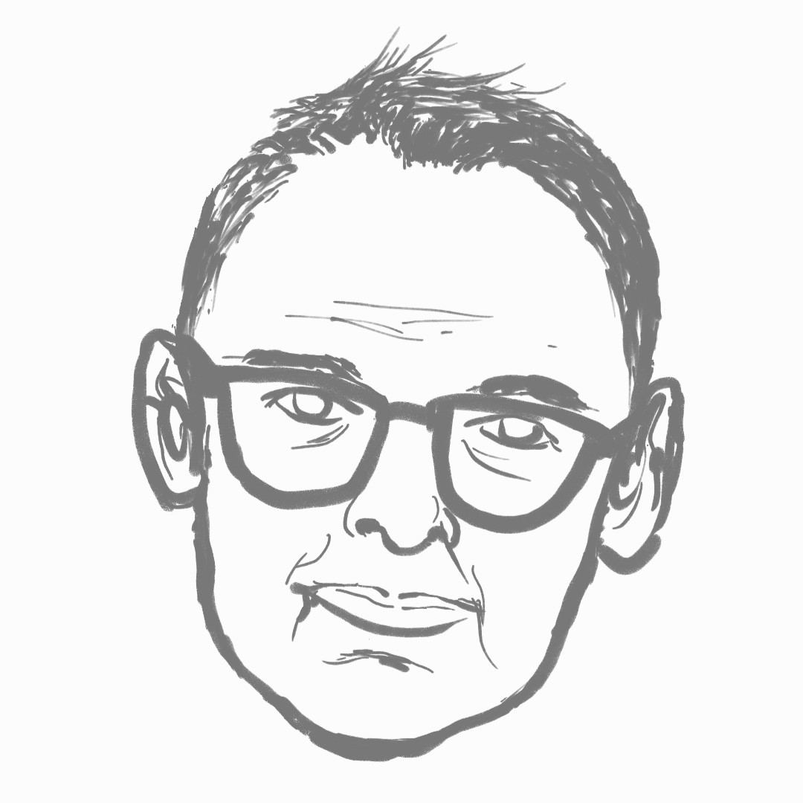

From Classical to Quantum Control
Ian Petersen explains how feedback systems power everyday technology and the quantum technologies of tomorrow.
Season 1 · Episode 4
From Classical to Quantum Control
Join Ian on a journey from cruise control in cars to controlling atoms and photons. Discover how feedback systems power the tech we use today and the quantum computers of tomorrow.
Listen
Guest speaker

Ian Petersen
Professor Ian Petersen was born in Victoria, Australia. After receiving a PhD in Electrical Engineering in 1984 from the University of Rochester in the US, he started his academic career as a postdoctoral fellow from 1983 at the School of Engineering at the Australian National University (ANU). And he worked for the University of New South Wales Canberra as a Scientia Professor from 1985 to 2016. In 2017, he came back to ANU as a Professor at the School of Engineering. His main research interests are in robust control theory, quantum control theory and stochastic control theory.
Quick quiz
Transcript
Open transcript
Speaker 1 (Sungyeon): Today, we have the pleasure of having Professor Ian Petersen.
Speaker 2 (Rebbecca): Professor Ian Petersen is from the School of Engineering at the Australian National University.
Speaker 1: Thank you, Ian, for taking the time to meet with us today.
Speaker 3 (Ian): My pleasure.
Speaker 1: So we would like to have a chat about control theory.
Speaker 3: Sure.
Speaker 1: And we are aware that control theory may sound quite abstract to many people. So what is control theory in a nutshell?
Speaker 3: OK, so control theory is about controlling things. So and in particular about the engineering design of feedback control systems, where we’ve got some piece of equipment we control – engineers often call a plant – that we’d like to control in some way. We’d like to do what we want to do. So typically the way we do this is we use feedback, which means that we might have some devices we call sensors that make some measurements of some aspect of our plant, we’ve got some other devices called actuators that can actually change the plant. And then we’ve got some way of taking that information of signals from those sensors processing it – maybe in a computer, or maybe in some electronics getting some new signals, feeding those into those actuators, and then controlling the system. And this is like a feedback into connection. It’s a loop where we’ve got information from the plant, go to the sensors, to the controller to the actuators and then back to the plant. And then control theory and control engineering is about designing that system, in particular the control part of it. The software on the computer or the way we construct the electronics to make our system behave how we want it, so that it controls the plant to do what we want to do, and maybe that’s like controlling the temperature in your house. You’ve got an air conditioner or a heater, you’ve got sensors. That’s might be a thermostat or something that measures temperature. You’ve got some software on the thermostat that calculates what we should do with a given temperature reading and then adjusts the output of our heater accordingly. So that’s a very simple control system, but we’ve got control systems, say in a car, we’ve got for example, adaptive cruise control where we try and control the speed of your car in such a way you don’t crash into the car in front of you, but you go along at a nice steady speed. Or we might control an aircraft. We want the aircraft to fly smoothly, not to crash, but to fly at constant speed. So all those things involve designing control systems, and that’s what control theorists and control engineers will do.
Speaker 2: Oh interesting, but you kept mentioning about plant. What is this plant actually?
Speaker 3: So that’s just the thing that we want to control. So, for example, in your home heating system, it’s actually your whole house. It’s you’re trying to control the temperature in your house. So we think of that as the thing they’re trying to control that the control engineer typically has, doesn’t design that somebody else has designed the house who he’s just designing, or she is just designing the control, the air conditioning system to make the temperature a nice temperature. Or if it’s the cruise control in your car, then the plant is just the car.
Speaker 2: Ah, interesting. So how did you get interested in control theory?
Speaker 3: I guess I start it started when I was an undergraduate student studying electrical engineering, but I did some courses in control systems, and there were really good lecturers. And I got really interested in the subject. I was always pretty sort of mathematically inclined, so that attracted me. And it seemed like an interesting area to get interested in. Then when it came for me to think about studying for a PhD, then I put down control systems as one of the areas that I thought I’d be most interested in.
Speaker 2: Ah OK, so it seems like to actually study control theory, you have to be good in math?
Speaker 3
Yeah, I think so. I mean, that’s why it’s called control theory. It’s about theory. And there’s lots of modelling and optimization and different mathematical ideas go into control theory. So I’d say most people who do control theory are kind of interested in the sort of mathematical side of engineering.
Speaker 1: Right. Yeah. Excellent. Could you then tell us a little bit about the research that you are working on?
Speaker 3: Ah yeah, I guess I’ve worked in lots of different aspects of control theory in terms of my research over the years. One of them is being robust control theory where we’re trying to make our control system so that it’ll work even if our plant is changing. For example, if we’re looking at a car and we say we’re controlling the braking system. We want the brakes to work, whether the road is a smooth road on a sunny day or it’s very wet and icy, or it’s rainy. All of those will change the behaviour of our plant, but we want the one control system to keep working in all those conditions. So that’s called robust control. Another area I’ve worked in is what’s called optimal control, which is related to optimization. It’s basically you want your control system to be the best possible control system. So, for example, you want the smoothest possible ride in your car. You want the safest possible ride in your aircraft, or you want your heating control to give the most comfortable temperature. So that’s another area I’ve worked in and then another area is quantum control, where this is kind of an out-there part of control theory. In most of the examples I talked about then the laws of classical physics, like Newton’s laws, could be used to model those systems, whereas quantum control theory we’re trying to control things that you have to use quantum mechanics to describe, so these are things like atoms controlling individual atoms or photons controlling individual photons. So this area started to become very important because of advances in quantum physics, and in particular, things like quantum computing.
Speaker 3: Another area that I’ve been interested in is really part of robust control, but a particular kind of robust control that I’ve been interested in is what we call negative imaginary systems theory, which is to do with controlling mechanical structures like flexible structures, for example large base structures you might want to control to try and get rid of any vibrations in these structures, and so it turns out that this negative imaginary systems theory was kind of a useful theory that could let you damp out these vibrations in a very robust way that it didn’t really matter what the actual dynamics of the structure was as long as it satisfied some sort of well-known physical laws, like conservation of energy. Then you would have this negative imaginary property, and we could use that to design a robust control system. So they’re kind of the main areas that we’re currently working on or have worked on over the years.
Speaker 2: OK, so these negative imaginary system. Where can we actually see them? Is it implemented in the real world as a controller or anything like that?
Speaker 3: As I said, in the sort of large base structures that I guess in the 80s there was so-called Star Wars project, where they were trying to build these large structures in space. That these ideas came into play. In particular, if you think of a mechanical system, like the one made of collections of masses, and if you like, springs connecting together these masses together, and if you apply a force to such a system and then measure the corresponding change and position of the masses turns out that always has this negative imaginary property, so that you can sort of exploit to damp the oscillations in these negative imaginary systems in these sort of say large space structures. But it doesn’t necessarily have to be a large base structure, it could be something actually at a very small level, it’s almost like a nano-scale level. Another area I’ve looked at was controlling what’s called atomic force microscopes (AFM) they’re kind of microscopes that could measure or image tiny samples, even down to an atomic level. It involves essentially tapping them with a very small flexible tip. So it’s a flexible structure at a micro- or nano-scale and you still need a control system to make this microscope work. And the same ideas that have worked on the large base structures also work at this very small nano-scale in terms of getting rid of the vibrations, which would give you a like a very poor-quality image if the tip was vibrating in the wrong way. So you try and control it to get damp out those vibrations.
Speaker 2: Wow, that sounds pretty cool actually. So you mentioned that you also work on quantum control stuff.
Speaker 3: Yes, sure.
Speaker 2: So well, you mentioned quantum computers, so it’s something that we see in news and articles and stuff. So can you actually give us some insight into what quantum computers will actually be doing in our everyday life?
Speaker 3: Right, so quantum computer is still something which is like an experimental area of science and engineering, but now big computing companies, like Google, Microsoft, and IBM, have started building experimental quantum computers, which can solve very small computing problems, but the idea is that, at least in theory, these could be scaled up to very big quantum computers, which would be able to solve computing problems that hadn’t been able to be solved before, like dealing with very large-scale databases, sorting information on a very large scale, so that might be that applicable to artificial intelligence. I guess one of the motivations for quantum computing was to actually be able to crack codes – so that governments were interested in this – at least theoretically, scientists said, well, a quantum computer would be able to do things much faster than a classical computer, including cracking codes. So far it’s nowhere near to the stage of actually being able to crack codes, but the physics says that these computers – if you could build them – big enough and accurately enough that they would be able to do this. So at the moment, there’s a lot of engineering efforts to try and make these quantum computers actually work at the scale that they can solve useful problems. But that’s where we think that quantum control might be useful as well as enabling these more practical quantum computers to be built. But still, it’s very early days, and yet, it’s not really clear whether, even if it’s possible to build a quantum computer which would actually be more useful than our current computers.
Speaker 1: Yeah. Thank you so much for sharing your insights and control theory. Also touching on quantum computers. So, after our conversation, I got super interested in control theory. So before we let you go, would you share a word with control theory enthusiasts like me?
Speaker 3: OK, so I guess I’ve been a control theory enthusiast for my whole career, and as we said before, what attracted me is the kind of mathematical nature of it, combined with its very real applications. And so, in our discussion we’ve talked about some of the areas that I’ve been interested in, but there’s a whole range of different areas that other control theory researchers are interested in. For example, biological and biomedical applications are a very large area. People are trying to understand biology by thinking about feedback systems that occur naturally in, say, large-scale biological systems, like it’s sort of the level of the earth or small-scale biological systems, such as within the human body, for example, you know, controlling blood sugar levels via the pancreas, and even looking at designing artificial control systems to use when those natural systems within the human body breakdown, for example in diabetes, then some control engineers are looking at replacing the natural feedback systems in the body by artificial feedback systems with sensors, actuators and computers to take over the role of the pancreas if it’s not working properly, leading to diabetes. So another thing people are looking at is a large-scale systems, like multi-agent systems, things like drones, or like whole networks of drones, flying in formation for example, there’s lots of control systems theory looking at that. Social networks is another area that a lot of control systems researchers have looked at, trying to understand the dynamic behaviour of large interconnections of people who have different social opinions that you can also apply control theory to that and try and analyse how those sociological issues might evolve.
Speaker 1: Wow, I’ve never thought that control theory is applied in such a broad scope of life and engineering. Thank you so much.
Speaker 2: Yes, that was really fruitful. Thank you so much for your time.
Speaker 3: OK. Thanks guys. My pleasure!